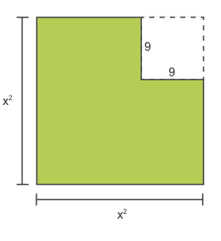
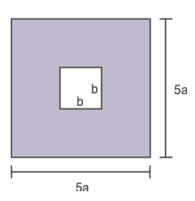
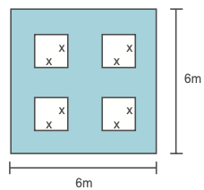

Capitulo 2
-Fatoração
95
Fator comum em evidência
- 36
- 108
- 70
- 150
- Os números acima podem ser fatorados. Troque ideias com um colega e, no caderno, escrevam o que significa fatorar um número.
- Em seguida, fatorem os números dados em fatores primos.
Acabamos de relembrar como realizar a fatoração de um número em fatores primos. Agora, veremos como fatorar um polinômio. Estudaremos as seguintes situações.
Situação 1
Vamos escrever a expressão que representa a área da figura de duas maneiras diferentes:
- 1.ª maneira: representar a área de cada polígono que compõe a figura e adicioná-las.
4a + 4b
- 2.ª maneira: fazer o produto da medida do comprimento pela medida da largura do polígono.
4 ∙ (a + b) = 4a + 4b
Note que o polinômio 4a + 4b pode ser escrito na forma de um produto. Temos que 4 ∙ (a + b) é a forma fatorada de 4a + 4b, sendo que 4 é um fator comum nos dois termos do polinômio 4a + 4b.
96
Situação 2
Vamos representar o polinômio 25xy + 5xz na forma fatorada colocando em evidência os fatores que são comuns.
Nesse caso, o fator comum aos dois termos do polinômio 25xy + 5xz é 5x. Temos que 5x é divisor comum de 25xy e 5xz. Então:
25xy + 5xz = 5x (5y + z)
forma fatorada
5·5·x·yObserve outros exemplos de fatoração com o fator comum em evidência:
a) 12x2y + 9xy2 = 3xy(4x + 3y)
b) 30m3 - 10m + 25m2 = 5m (6m2 -2 + 5m)
c) 7x2 + 6x4 - 3x = x (7x + 6x3 - 3)
d) 12x (a + 1) + 13y (a + 1) = (a + 1) (12x + 13y)
e) 
f) y8 - y7 = y7 (y - 1)

Encontre soluções
- a) 130
- b) 88
- c) 244
- d) 192
- a) 2 ∙ 32 ∙ 5
- b) 22 ∙ 33
- c) 32 ∙ 5 ∙ 7
- d) 2 ∙ 11 ∙ 13
- a) ab + bc
- b) 6x + 6y + 6z
- c) 3m3 - 6n
- d) 11y4 - 5y2
97
- 5. Sabendo que a + b + c = 75 e x - y = 12, calcule o valor numérico da expressão a(x - y) + b(x - y) + c(x - y).
Agrupamento
Vamos estudar agora outro exemplo de fatoração, em que utilizaremos os conhecimentos adquiridos anteriormente.
Observe o seguinte polinômio: 3x + 5x + 3y + 5y.
Neste polinômio, não há um fator comum a todos os termos, porém, temos um fator que é comum ao 1.º e 2.º termos e outro que é comum ao 3.º e 4.º. Sendo assim, vamos colocá-los em evidência.
3x + ax + 3y + ay = x (3 + a) + y (3 + a)
fator comum
fator comum
Note que surge um fator que é comum aos dois termos. Colocando-o em evidência, temos:
3x + ax + 3y + ay = x (3 + a) + y (3 + a) = (3 + a) (x + y)
Fator Comum
Forma Fatorada
Observe outros exemplos de fatoração por agrupamento:
- a) 7x + 7y + mx + my = 7(x + y) + m(x + y) = (x + y)(7 + m)
- b) 11a - 11b + ac - bc = 11(a - b) + c(a - b) = (a - b)(11 + c)
- c) ab + ac - by - cy = a(b + c) - y(b + c) = (b + c)(a - y)
- d) x2 - x + ax - a = x(x - 1) + a(x - 1) = (x - 1)(x + a)
Encontre soluções
- Fatore, em seu caderno, os polinômios a seguir.
- a) 8m + 8n + pm + pn
- b) 11x - 11y + ax - ay
- c) b2 - b + by - y
- c3 + cd - mc2 - md
- e)

- f)

98
- a) Escreva o polinômio que representa a área da figura.
- b) Qual é a forma fatorada deste polinômio?
- 3. Determine o valor da expressão
ax - a - x + 1, sabendo que x - 1 = 12 e a - 1 = 8. - 4. Se x + y = 25 e z
+ z2 +
xy = 21, determine o valor numérico da expressão
xz + yz + z2x + z2y + x2y + y2x.
Encontre soluções
- Fatore os polinômios a seguir em seu caderno.
- a) x2 - 81
- b) x2y2 - 4x2
- c) 1 - 36b4
- d) c6 - y8
- e)

- f)

- 2. Escreva os polinômios que representam as partes coloridas das figuras. Em seguida, represente as formas fatoradas de cada um.
- 
-  c)
- 
- 3. Observe:
- 7x2 - 7y2 = 7(x2 - y2) = 7(x + y)(x - y)
- a) 12m5 - 3m3n2
- b) y3 - 16y
- c) b2c - c
- d) m4 - 16
- e) c4 - 1
- f) 81 - y8
- 4. Se x + y = 13 e x
- y = 4, determine o valor
numérico da
expressão
11x2 - 11y2. - 5. Observe:
- (x + 3)2 - 25 =
= [(x + 3) + 5][(x + 3) - 5] =
= (x + 3 + 5)(x + 3 - 5) =
= (x + 8)(x - 2)
- (x + 3)2 - 25 =
- a) (a - b)2 - 16
- b) 49 - (x + 5)2
- c) (a + b)2 - (a - b)2
- d) (3 - x)2 - (4 + x)2
- 6. Identifique entre as afirmações a seguir quais são verdadeiras.
- a) Fatorando o polinômio 9y2 + 36, obtemos (3y + 6)(3y - 6).
- b) A forma fatorada do polinômio
25x2 - 5x é 5x(5x - 1). - c)O produto (8x2y2 + 3y)(8x2y2 - 3y) é a forma fatorada do polinômio 64x2y4 - 9y2.
99
Agora, no caderno, fatore completamente os polinômios a seguir.
De acordo com o exemplo, fatore os seguintes polinômios.
Trinômio quadrado perfeito
Vamos representar a área da figura a seguir.
A sua área pode ser determinada por
(a + b)(a
+ b).
Estudamos anteriormente que este é um produto notável.
(a + b)(a + b) = (a + b)2 = a2 + 2ab + b2
O polinômio a2 + 2ab + b2 é denominado de trinômio quadrado perfeito e sua forma fatorada é (a + b)2.
100
Vamos agora escrever o polinômio que representa a área da região colorida da figura a seguir.
A sua área pode ser determinada por (a - b)(a - b).
Este produto representa um produto notável.
(a - b)(a - b) = (a - b)2 = a2 - 2ab + b2
O polinômio a2 - 2ab + b2 também é chamado de trinômio quadrado perfeito e sua forma fatorada é (a - b)2.
Atenção!
Nem sempre um trinômio é quadrado perfeito. Para isso, ele deve ter dois termos elevados ao quadrado e um (positivo ou negativo) que seja o dobro do produto dos termos que foram elevados ao quadrado. Observe:
9 + 6x + x2
trinômio quadrado perfeito
quadrado de 3
quadrado de x
2·3·x
25 + ab + a2b2
não é trinômio quadrado perfeito
quadrado de 5
quadrado de ab
para termos um trinômio quadrado perfeito, este termo deveria ser 2 · 5 · a · b
Observe a forma fatorada de outros polinômios que são quadrados perfeitos:
- a) x2 + 10x + 25 = (x + 5)2
- b) b2 - 14b + 49 = (b - 7)2
- c) m4 + 2m2n2 + n4 = (m2 + n2)2
- d)

101
Encontre soluções
- Copie, em seu caderno, os polinômios que são trinômios quadrados perfeitos.
- a) x2 + 8x + 16
- b) 25 - 2x + x2
- c) m2n2 - 2mn + 1
- d) b2 + 14b + 49
- e) 36x2 + 12xy + y2
- f) c4 - cd + d4
x2 + 6x + 9.
- a) x2 + 12x + 36
- b) y4 - 14y2 + 49
- c) 9x2 + 6x + 1
- d) 1 - 10y + 25y2
- e)

- f)

- a) 5x2 + 20x + 20
- b) ab4 - 6ab2 + 9a
- c) 8x3 + 16x2 + 8x
- d) -3x2 - 12x - 12
102
Probabilidade e estatística
- Situações com base em gráficos
Em dupla, leiam o infográfico a seguir e elaborem 3 questões para que sejam respondidas por outros colegas. Explore os conceitos da seção “Probabilidade e Estatística” que foram estudados até o momento.
Fonte: Revista Cenarium: da Amazônia para o mundo. Disponível em: https://cutt.ly/1ZuihQd. Acesso em: 03 jun. 2022.
103
Relembre
- Calcule os seguintes produtos notáveis em seu caderno:
- a)

- b) (3y3 - 8xy)2
- c) (m4 + n3)(m4 - n3)
- d)

- e)

- f)

- a)
- (PUC-SP) A expressão (2a +
b)2 - (a
- b)2 é igual
a:
- a) 3a2 + 2b2
- b) 3a2 + 6ab
- c) 4a2b + 2ab2
- d) 4a2 + 4ab + b2
- Sendo m4 + n4 = 10 e mn = 6, determine o valor de (m2 - n2)2.
- 4. (FCC-SP) A expressão (x - y)2 - (x + y)2 é
equivalente
a:
- a) 0
- b) -2y2
- c) 2y2
- d) -4xy
- (PUC-SP) A expressão (x +
y)(x2 +
y2)(x - y) é
igual
a:
- a) x4 + y4
- b) x4 - y4
- c) x3 + xy2 - x2y - y3
- d) x3 + xy2 + x2y + y3
- Fatore os polinômios a seguir.
- a) 15x + 15y + 30z
- b) b2 + bx + bc + cx
- c) y2 + 22y + 121
- d) 169 - x2y2
- e) a3 - 7a2 - 3a + 21
- f) 8(x + y) - b(x + y)
- g)

- h)